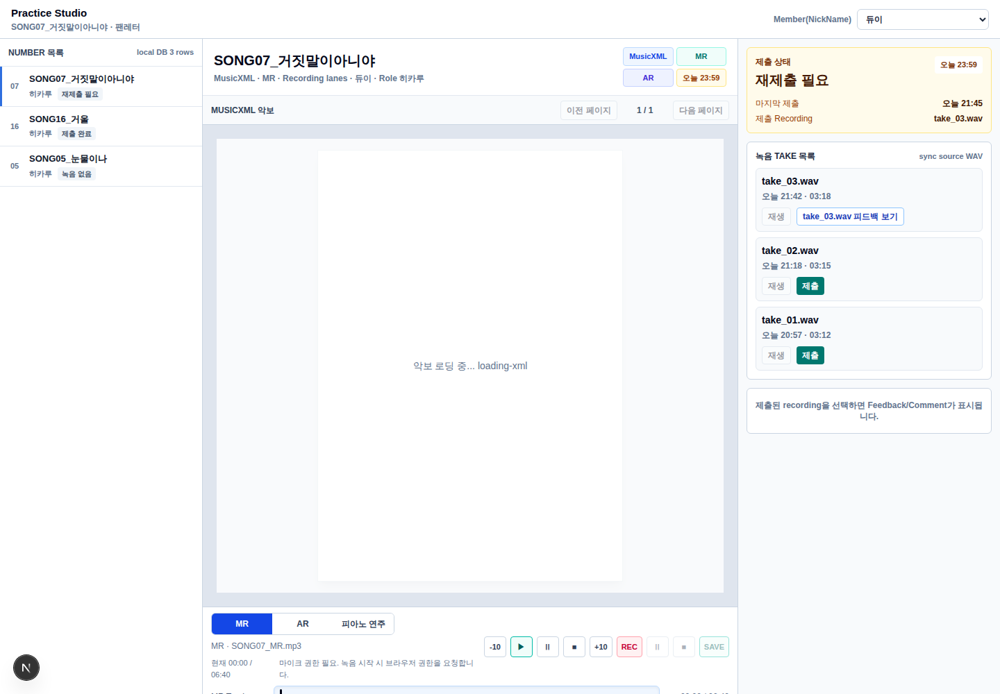

자동 검증
| lint | pnpm lint 통과 |
|---|---|
| typecheck | pnpm typecheck 통과 |
| unit test | pnpm test 통과 — 11 files, 48 tests |
| Playwright | tests/e2e/work-piano-playback.spec.ts --project=chromium 통과 |
작성일: 2026-05-31 · 대상 화면 /work · 기준 브랜치 codex/local-db-prototype
악보재생 source를 피아노 연주 source로 전환했다.ScoreViewer와 piano parser가 공유하도록 onMusicXmlLoaded callback을 추가했다.| lint | pnpm lint 통과 |
|---|---|
| typecheck | pnpm typecheck 통과 |
| unit test | pnpm test 통과 — 11 files, 48 tests |
| Playwright | tests/e2e/work-piano-playback.spec.ts --project=chromium 통과 |
피아노 연주 source 표시, slider 활성화, 재생 클릭, console play interruption 미발생을 확인한다.Running 1 test using 1 worker [chromium] › tests/e2e/work-piano-playback.spec.ts › Practice Studio piano playback › renders MusicXML and exposes piano playback transport 1 passed (6.6s)
실제 http://localhost:3000/work 화면 캡처.

| 변경 전/후 | 2026-05-31-work-piano-playback-before-after.html |
|---|---|
| 계획 문서 | 2026-05-31-musicxml-piano-playback-plan.md |
| 스크린샷 | 2026-05-31-work-piano-playback.png |
{kind=link}